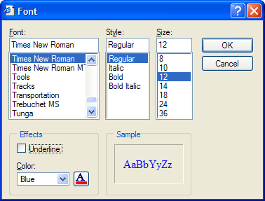

Format Menu Functions
|
Function |
|
Description |
|
Available only when you select text on the WYSIWYG tab. Displays the Font dialog box and wraps the selected text with the following HTML codes: Font_Name size= Font_Size > Selected Text . | ||
|
|
Displays the <span class=Screen>CSS Editor</span>, which allows you to edit an existing CSS style sheet. | |
|
|
Displays the Link Style Sheet dialog, which allows you to link to a CSS style sheet located locally or at a URL address. Note: A local style sheet must first be added to the current project. | |
|
Remove Formatting |
|
Available only when you select text on the WYSIWYG tab. Removes all HTML formatting codes. |
|
Properties |
|
|
To change the font, point size, style, or color of text:
Display the WYSIWYG tab of your HTML Editor window.
Select the text and click Format > Font.
Optionally, select values from the Font, Style, and Size lists.
You may also enter a point size, such as 8.5, into the Size field.

Optionally, select a color from the Color list.
Optionally, click to display the Color dialog.
Optionally, select a color from either of the Basic colors or Custom colors palettes.
Optionally, click Define Custom Colors >> and select a color from the larger multi-colored window at right.
Optionally, enter Hue, Saturation, and Luminance values (0 to 255).
Optionally, enter Red, Green, and Blue values (0 to 255).
If you create a new color definition, you may click A dd to Custom Colors to add it to the Custom colors palette.
The dialog will generate HTML code for font and color similar to the following.
|
.... |
The dialog will generate .... for bold, .... for italic, and .... for underline.
There are two approaches to applying a cascading style sheet to your page. You can either link to the style sheet or embed its contents between tags.
To embed a style sheet into the page:
Select Format > Edit Style Sheets(s)... to display the CSS Editor.
Click Import CSS to display the Import dialog.
Select Append and OK.
Navigate to the .CSS file, select it, and click Open.
Click OK to return to the HTML Editor. The Style list box will list the embedded styles.
To link to a local style sheet:
First, add the style sheet to your project.
Select Format > Link Style Sheet... to display the CSS Editor.
Click Local Style Sheet.
Select the style sheet from the list and click Link. The Style list box will list the linked styles.
To link to a remote style sheet:
First, add the style sheet to your project.
Select Format > Link Style Sheet... to display the CSS Editor.
Click Absolute URL.
Enter the URL, directory location, and filename of the .CSS file in the URL Style Sheet control.
Select the style sheet from the list and click Link.
 Note: The Style
list box will not list styles from the remote
style sheet. You will have to display the Source
tab and enter appropriate HTML codes into the page .
Note: The Style
list box will not list styles from the remote
style sheet. You will have to display the Source
tab and enter appropriate HTML codes into the page .
Limitations
Web publishing applications only.
See Also